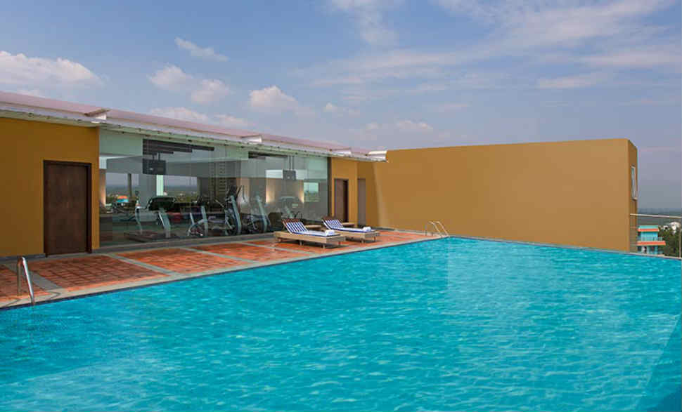

Blogs by Niraj palmur
5-STAR HOTELS IN PUNE FOR AN AMAZING FAMILY HOLIDAY
1.Sheraton Grand Pune Bund Garden Hotel

Going way above and beyond the sparkle and splendour of an expected 5-star property,
Sheraton Grand Pune Bund Garden Hotel has all the offerings for an amazing family holiday
and more.Treat yourself to decked-up rooms and suites with the choicest amenities, and enjoy
a movie night on your personal DVD player while munching on delightful snacks ordered through
24-hour room service.The rooftop pool on the 10th floor makes for a fun activity, as does the
recreation centre where you can play games like table tennis and carom. With six food outlets
including Bene (Italian) and Chingari (Indian),the cuisine options are plenty to suit everyone’s
taste buds. Needless to say, this is one of the best 5-star hotels in Pune to check into for a
family holiday.
Address:Raja Bahadur Mill Road, Pune, Maharashtra 411001
Cost:Starting at INR 6,480 per night
2.Amanora The Fern
An oasis of green, Amanora The Fern makes for the perfect family vacation destination. Set around a
placid lake, the views from all corners are spectacular. There are 26 rooms and suites available at
the hotel with exceptional furnishings and facilities. An added advantage for families is the choice
of interconnecting rooms. Leisure activities at the hotel include a swimming pool, indoor games’ room,
table tennis and foosball tables, badminton and squash courts and a rooftop tennis court. There’s also
a yoga room for serenity seekers. With the availability of global cuisines at the hotel’s restaurants,
guests are treated to gourmet flavours from around the world.
Address: Amanora Town Centre, Magarpatta Road, Amanora Park Town, Hadapsar, Pune, Maharashtra 411028
Cost:Starting at INR 5,546 per night*
3.Sayaji Pune
For a 5-star holiday that doesn’t break the bank, the Sayaji Pune is a great option. Accommodation in
the hotel’s rooms and suites leave nothing lacking by way of services and amenities. The staff is
dedicated to ensuring that guests young and old have all their needs met. With dining options that
include the multi-cuisine Turque, along with the pan-Asian, Indian and continental Portico, chefs are
happy to accommodate any special meal requests guests may have. For some rest and relaxation, lounge
around the rooftop swimming pool, or recharge with a workout at the hotel’s gym.
Address: 35/136, Mumbai-Bangalore Bypass Highway, Wakad, Pune, Maharashtra 411057
Cost:Starting at INR 4,953 per night*